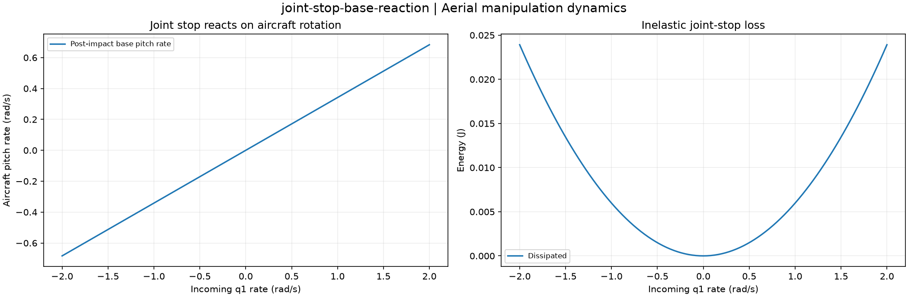

Reproducible Aerial manipulation dynamics. Units and field components are printed on the scientific axes. peak d-q quantities use exp(+i omega t); terminal currents point into the protected line.
Sealed numeric archive | Summary CSV | Physical parameters | Run request | Source and environment

| maximum_base_pitch_rate_rad_s | 0.683317926906804 |
|---|---|
| maximum_momentum_defect_n_s | 6.206335383118183e-17 |
These are simulations, not hardware measurements. Network-model, measurement, timing and statistical uncertainty require distinct convergence checks. Singular or unilluminated data use explicit masks.
Source revision: 4098e4e4fa0f02760b06b365a66778514870c60b.
Dirty checkout: False.
Configuration SHA-256: 4a1869e63ce841e11f70d0f0117444f3a1c664534bdb84271d12b348c7b9016c.
Replay preserves original source and parameter provenance. SHA-256 manifests detect changed bytes; they are unsigned integrity records, not certificates of physical validity.